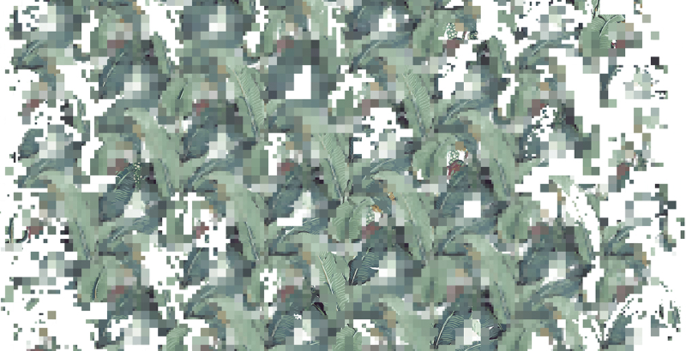

1230 5th Ave,
New York, NY 10029
01.20.16 — 01.20.17
Joiri Minaya: Redecode
Redecode: a tropical theme

is a great way to create a fresh,
peaceful, relaxing atmosphere
is derived from two wallpapers
designed in the 1940s
for sumptuous redecorations
in luxurious hotels in the United States
Recalling scientific illustrations,
the original patterns belong to a style popularized
at midcentury. Names such as Brazilliance,
designed for the Greenbrier Hotel in West Virginia
by Dorothy Draper, and Martinique Banana Leaf,
designed for the Beverly Hills Hotel by Don
Loper allude to their relationship to tropical
landscapes. This stylistic interest coincides
with the peak period of U.S. interventions
into Latin America and the Caribbean. These
designs and their names offer a way to explore
some of the constructed notions of fantasy,
exoticism, pleasure, domestication, and consumerism
associated with the tropical landscape and its
subjects that still prevail today.